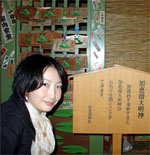
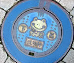
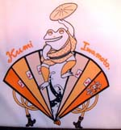
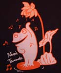
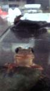
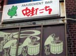

ゲロ温泉はカエル天国！ 【東京発けろねこや同志記者】下呂温泉は「下呂＝ゲロゲロ」でカエルが多数いるといううわさを聞いて、先週末に行ってきました！確かに町中カエルものがあふれており、夢のような旅でした。マンホールの蓋もカエルです（添付参照）。かえる神社もありました（添付参照、写っているのは私です）！！ 気になったのは、シーズンオフのせいか、観光客がまばらで町に活気がなかったこと。 【全国かえる奉賛会】温泉を水道で薄めたりする世の中だが、下呂温泉はカエル度爆発で、大躍進だああああああ。カエラー推薦の温泉地なので、いまはまばらでも、将来は、温泉地にカエルがぎっしり集まるはずであるうう。 かえる旅館は「小川屋」！！ 【東京発けろねこや同志記者】カエラーの皆様、下呂に行ってカエル町おこしに一役買ってみませんか？なお、平成９年8月5日号で大王様がお探しだった下呂温泉の旅館は「小川屋」だと思います（残念ながら宿泊してませんが）。実は、下呂に行く前に「かえるまんじゅう」「かえるサブレ」で有名や名古屋の青柳ういろうへお土産を買いに行きました。 店内に「弊社のかえるコレクション1,500点のうち、ほんの一部を展示します」という案内のもと、かえるグッズが国別に多数展示されていて感激でした（プラザフルール店）。 青柳ういろうホームページをチェックしたところ、「かえるまんじゅう えかきうた」がありました。また、青柳ういろうの柳に飛びつくカエルマークの由来は だそうです。 けろねこや同志記者に勲章を授与【全国かえる奉賛会】五年の歳月を超えて、情報提供を果たした、けろけこや同志記者に対して、勲章を授与します。アマガエル徽章を持っていってくれえええ。
演歌歌手・岩本公水のグッズにカエルＴシャツ！ 【日本発 泉同志記者】突然ですが、演歌歌手・岩本公水（いわもと くみ）は今年デビュー１０周年を迎えたことから、自分の好きなカエルをテーマに「何か記念グッズ」を作りたいと考えて、今夏、写真のカエルＴシャツが出来ました。イラストは恥ずかしながらワタクシ…（以前、「カエル万年筆」でこの新聞に投稿させていただいたことがございます。そう、いうまでもなく私もカエラーです。）デザインは公水ちゃんと何度も相談しながら、あえて演歌らしくない、ハッピーなイメージのものにしようということで、今回の完成に至りました。
 Ｔシャツは２種類で白シャツはフロントの胸元にエンジェル・フロッグ、背中に扇カエル。もう一つのネイビーシャツは片袖にエンジェル・フロッグ、背中に音のシャワーを浴びて歌うシンギン・フロッグがプリントされてます。カエルに興味のないお客さんにもウケがいいので、カエラーとしては嬉しいかぎり。今年のツアーではバックバンドのメンバーもスタッフも、このシャツで頑張りましたよ！！欲しい方、興味のある方は岩本公水のＨＰを御覧下さい。 公水オリジナルグッズコーナー おたまの頃から大切に育てた自慢のカエル！ 【福岡発ピョン吉はずき同志記者】こんにちは。いつも読んでます。近所の池ですくってきておたまの頃から大切に育てた自慢のペットです、あまりにかわいいので送りました。新聞に載らなくてもいいので、ぜひ見てください。うしろにも一匹いるんですよ。
【全国かえる奉賛会】かわいいものよのう！呼び掛けたら反応するようになるらしい。カエルのあいじょう。百歳迄という諺もあるように、大切にするんぢゃぞおおおお。
小倉で発見！カエルな飲み屋！！ 【小倉発玄海育ちのジョー様】小倉の町で見つけた飲み屋の看板だよ。
【全国かえる奉賛会】ぐああああああ。このさびれた飲み屋は、カエルで劇的にはやる店になるとおもうぜえええ。カエルの下の、謎の絵も気にあんるけど、古いビルが、カエルによって華やかに蘇るのはいいものよのう。 カエル新聞縮刷版は来年発行へ！朝日新聞縮刷版とともに、図書館に並ぶ日も近いであろう。年内発行だからなー。みんな、これまで以上に「かえる新聞」での報告をまっていてくれえええ。 ところで、縮刷版は、過去の全部の新聞を収録したいところぢゃが、収録件数の制限があって、全部とはゆかないのぢゃ。大王が選択するので、まかせてほしいのだが、もしも、投稿したねたが、縮刷版に収録するのは、ちょっとなーと思っている人は、早めに教えてほしい。大王あてメール→大王様へのメールwakuro-3@hf.rim.or.jp
収録からはずすこともできます。 携帯で携帯＠カエル新聞を吸い取ろう！ 【全国かえる奉賛会】携帯から初めてカエル新聞を見たいというひとにとっては、アドレスを打つのが難儀なものよのう！そこでドコモとボーダフォンの一部機種から、カメラをかざしてコードを読みとるんぢゃああ。なお、このQRコードを眺めていたらカエルやらオタマジャクシやらが浮かび上がってくるらしいぞおお。ほんとかああ。
【全国かえる奉賛会】携帯から初めてカエル新聞を見たいというひとにとっては、アドレスを打つのが難儀なものよのう！そこでドコモとボーダフォンの一部機種から、カメラをかざしてコードを読みとるんぢゃああ。なお、このQRコードを眺めていたらカエルやらオタマジャクシやらが浮かび上がってくるらしいぞおお。ほんとかああ。
|
メールマガジン登録
メールマガジン解除
Powered by


かえる古新聞過去に取り上げた記事を見出し付きで一覧したい人は、ここをクリック◆創刊号を見る◆前号を見る◆話題の号を見る◆かえる新聞の昔を読む
|
私も入っています。。全国かえる奉賛会
大王様に会うには、このバナーをクリック。ずっと奥に写真館があるぞ。全国かえる奉賛会に入会するには、自分のホームページのどこかに、下の部分を追加するとバナーがリンク付きで表示されるぞ。どんどん入会しましょー |


|